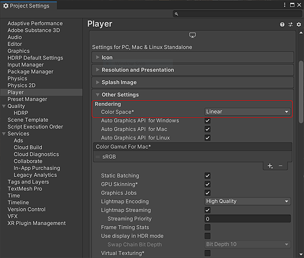

Go to Edit>Project Settings>Player
Substance textures are designed to be used with a Physically-based shader. For the best results, you should set the color space to linear in the Unity Player Settings.
Go to Edit>Project Settings>Player
In the Rendering section, change the Color Space to Linear. (Unity defaults to Gamma space, which is incorrect and will result in your texture color looking wrong).
sRGB options on textures are disabled if the Color Space Setting in Unity is set to Gamma
